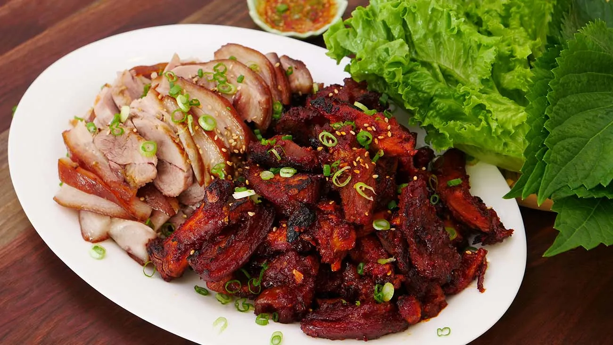

Jokbal
Home

A glistening platter of jokbal presents tender, gelatinous pig trotters braised until falling-off-the-bone, lacquered in a sweet-savory soy-garlic glaze. Aromas of star anise, ginger, and toasted sesame mingle as the meat is thinly sliced and served with spicy ssamjang and crisp lettuce for wrapping.
Ingredients
- Pig trotters (pig's feet)
- Soy sauce
- Garlic
- Ginger
- Rock sugar (or brown sugar)
Steps
- Clean and blanch - Rinse the trotters, then blanch in boiling water briefly to remove impurities; drain and rinse.
- Prepare the braising liquid - Combine soy sauce, water, smashed garlic, sliced ginger, star anise, and rock sugar in a large pot.
- Braise slowly - Add the trotters to the liquid, bring to a simmer, cover, and braise gently for 2–3 hours until the meat is tender and gelatinous.
- Reduce the sauce - Remove the trotters, strain the braising liquid, then boil it down to a glossy, concentrated glaze; return briefly to coat the meat if desired.
- Slice and serve - Thinly slice the jokbal, arrange on a platter, and serve with lettuce, ssamjang, pickled radish, and toasted sesame seeds.